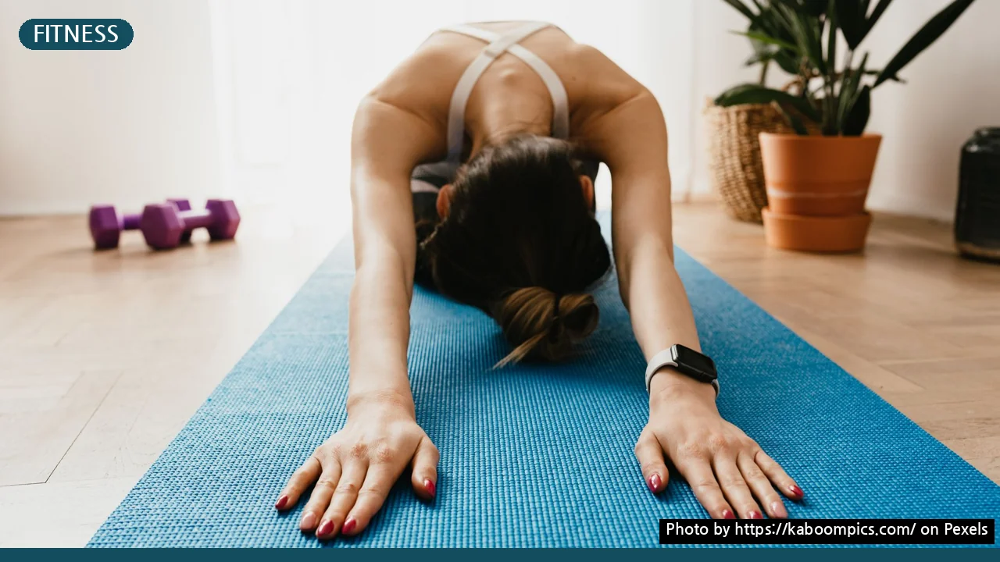
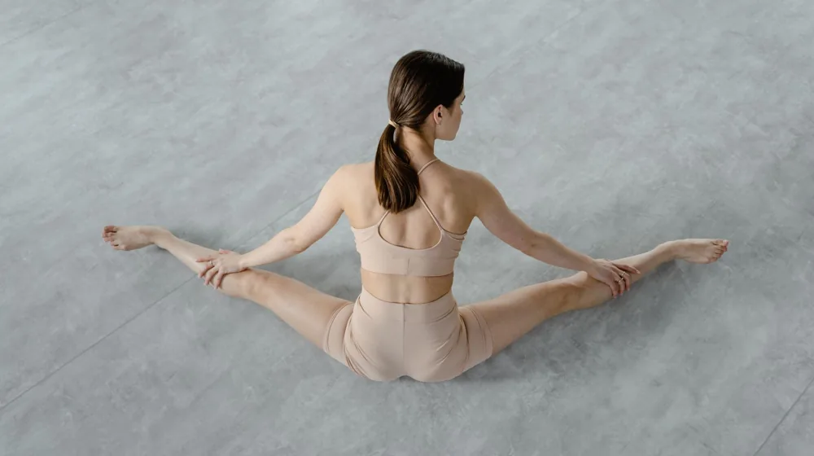
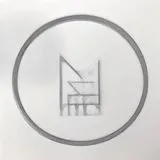

홈트레이닝 초보자 가이드: 돈 안 쓰고 하루 15분으로 시작하는 법
사진: https://kaboompics.com/ / Pexels (무료 이미지, 출처 표기)
홈트레이닝 시작 전 알아야 할 3가지 원칙

유튜브를 보고 홈트레이닝(이하 홈트)을 결심했지만, 작심삼일로 끝나거나 무릎 통증만 얻고 포기한 경험이 있으신가요? 헬스장에 가지 않고도 집에서 충분히 건강하고 탄탄한 몸을 만들 수 있습니다. 핵심은 거창한 장비나 강도 높은 운동이 아니라, 내 몸에 맞는 안전한 시작입니다.
미국스포츠의학회(ACSM)에 따르면 성인의 경우 일주일에 최소 150분의 중강도 운동을 권장합니다. 하지만 운동 초보자가 처음부터 이 기준을 채우기는 쉽지 않습니다. 다음의 3가지 원칙을 먼저 마음에 새기고 시작해 보세요.
- 완벽함보다 꾸준함: 초기에는 하루 10분이라도 매일 정해진 시간에 매트 위에 서는 습관을 들이는 것이 중요합니다.
- 자신의 체력 인지: 남들의 속도를 무작정 따라 하다가 관절이나 인대를 다치면 운동을 지속할 수 없습니다.
- 통증과 자극의 구분: 근육이 뻐근한 느낌은 자연스럽지만, 관절이나 뼈 부위의 찌릿한 통증은 즉시 운동을 중단하라는 신호입니다.
준비물 비교: 맨몸 운동 vs 필수 소도구 가이드
처음부터 비싼 실내 자전거나 덤벨 세트를 살 필요는 없습니다. 아래 비교표를 참고하여 본인의 상황에 맞는 준비물을 최소한으로 갖춰보세요.
처음에는 맨몸으로 시작하되, 바닥에 무릎이나 등을 댈 때 통증을 줄여주는 요가 매트는 구비하는 것을 적극 권장합니다. 매트의 두께는 관절 보호를 위해 8mm 이상의 두꺼운 제품을 선택하는 것이 좋습니다.
부상 없이 안전하게 운동하는 4단계 절차
집은 전문 트레이너가 감시해주지 않기 때문에 스스로 안전 장치를 마련해야 합니다. 다음 단계를 순서대로 지켜 부상을 방지하세요.
- 공간 확보 및 환기: 양팔을 벌렸을 때 벽이나 가구에 닿지 않는 공간을 확보하고, 운동 전후로 가볍게 환기합니다.
- 웜업(Warm-up) 5분: 제자리 걷기나 가벼운 제자리 스트레칭으로 체온을 올리고 관절의 가동 범위를 넓힙니다.
- 본 운동 15~20분: 타겟 근육에 집중하며 느리고 정확한 동작으로 수행합니다. 거울이나 스마트폰 카메라로 자세를 체크하면 큰 도움이 됩니다.
- 쿨다운(Cool-down) 5분: 사용한 근육을 이완시키는 스트레칭으로 심박수를 서서히 낮춰 피로 물질 생성을 줄입니다.
초보자를 위한 무소음 전신 홈트레이닝 루틴
층간소음 걱정 없이 아파트에서도 조용히 할 수 있는 대표적인 무소음 전신 루틴입니다. 각 동작은 10~12회씩 3세트를 목표로 진행하세요. 세트 사이에는 1분간 휴식을 취합니다.
- 슬로우 버피: 점프 없이 천천히 엎드렸다 일어서는 동작으로, 전신 유산소 및 코어 근력 강화에 효과적입니다.
- 월 스쿼트(Wall Squat): 벽에 등을 대고 버티는 스쿼트 동작입니다. 일반 스쿼트보다 무릎 관절이 약한 초보자에게 훨씬 안전합니다.
- 무릎 대고 푸쉬업: 상체 근력이 부족한 초보자도 가슴과 삼두근을 안전하게 단련할 수 있는 변형 동작입니다.
- 버드독(Bird-dog): 엎드린 자세에서 한쪽 팔과 반대쪽 다리를 번갈아 뻗는 동작으로, 허리 통증 완화와 코어 안정성에 도움을 줍니다.
홈트레이닝 시작할 때 주의할 점
유튜브 영상을 고를 때는 조회수나 자극적인 썸네일보다 '초보자용', '자세 설명', '무소음'이 제목에 포함된 콘텐츠를 선택하는 것이 안전합니다. 빠른 속도로 진행되는 고강도 인터벌 트레이닝(HIIT)은 자세가 무너지기 쉬워 초보자의 관절에 무리를 줄 수 있으므로 피해야 합니다.
또한, 평소 만성 질환이나 관절 염증을 앓고 있다면 홈트레이닝을 시작하기 전에 반드시 의사 등 전문 의료진과 상담하여 피해야 할 동작을 미리 확인해야 합니다. 본 가이드는 일반적인 건강 증진을 목적으로 작성되었으며, 개인의 신체 조건에 맞춰 운동 강도를 조절하시기 바랍니다.
🔗 이 글도 함께 보면 좋아요: 운동 후 통증, 단순 근육통 vs 부상 구분하는 4가지 기준
관련 추천 상품
이 포스팅은 쿠팡 파트너스 활동의 일환으로, 이에 따른 일정액의 수수료를 제공받습니다.
한눈에 보는 상품 목록

NBR 10mm~20mm 고밀도 요가매트
라텍스 루프 저항 밴드 세트
EPP 고밀도 폼롤러 60cm/90cm